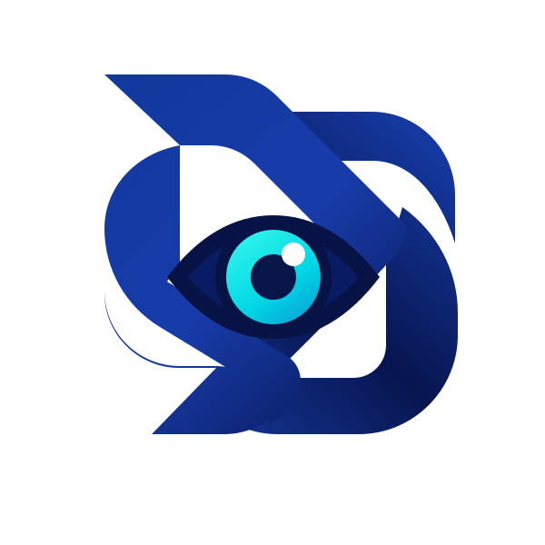

Decoupled Extended Unitary Script
Animated production asset. The motion runs inside the SVG and automatically respects your operating-system preference.


Animated production asset. The motion runs inside the SVG and automatically respects your operating-system preference.

